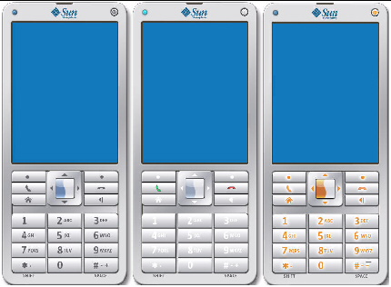
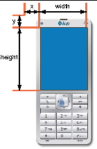
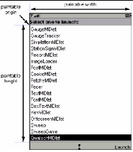
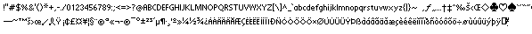

| Sun Java Wireless Toolkit for CLDC Basic Customization Guide |
| Sun Java Wireless Toolkit for CLDC Basic Customization Guide |
| C H A P T E R 2 |
|
Skinning the Emulator |
This chapter describes how emulator skins are defined. You can modify existing skins or create new skins for the emulator. This process is known as skinning the emulator.
Emulator skins are defined by a single property file. Each skin property file is contained in its own subdirectory of toolkit\wtklib\devices, where toolkit is the installation directory of the Sun Java Wireless Toolkit for CLDC. The name of the property file matches the directory name.
For example, the DefaultColorPhone skin is defined by DefaultColorPhone.properties in the toolkit\wtklib\devices\DefaultColorPhone directory.
The skin property file defines the appearance and behavior of the emulator skin. It includes pointers to images and sounds that may or may not reside in the same directory. For example, the DefaultColorPhone directory contains images for the phone itself, but the icons and sounds for DefaultColorPhone are defined in wtklib\devices\Share.
The remainder of this chapter describes the contents of the skin property file. The property file is a plain text file. You can use any text editor to modify it. In general, entries in the property file have a property name followed by a value. A colon or equals sign separates the name and value. Lines that begin with a hash mark (#) are comments.
The simplest way to create a new skin is to copy an existing one and modify it, for example:
1. Copy the DefaultColorPhone directory.
2. Name the new directory with the name of your new skin.
3. Rename the properties file to match the directory name.
If you named the directory NewSkin, rename its property file to NewSkin.properties.
The overall appearance of the emulator skin is determined by a variety of factors, each of which is described in this section:
Much of a skin's appearance is determined by three images:
1. The default image shows the device in a neutral (normal) state.
2. The highlighted image shows the device with all the buttons highlighted, as they are when the user moves the mouse over the buttons.
3. The pressed image shows the device with all its buttons pressed.
Each of these images shows the entire device. The toolkit uses portions of these images to show button highlights and button presses.
For example, the three images from DefaultColorPhone are shown in FIGURE 2-1.
FIGURE 2-1 Normal, Highlighted, and Pressed Images for DefaultColorPhone

A close-up of a portion of each keypad is shown in FIGURE 2-2 so you can see the differences in the three images.
FIGURE 2-2 Normal, Highlighted, and Pressed Emulator Skin Image Details

In the skin property file, the three image files are specified with the following properties:
The image files can be PNG, GIF, or JPEG. Use the same dimension for all image files. For example, DefaultColorPhone.properties has the following entries:
The screen represents the display of a real device. It is defined by the overall screen bounds, the paintable bounds, and other parameters that determine factors like the number of colors.
The overall screen bounds are the total area of the display. They are defined in pixel measurements relative to the origin of the image files, which is in the upper left corner (0,0).

The screen bounds are specified in the property file as follows:
Most devices do not make their full display area available to MIDP applications. The remainder of the screen is generally reserved for icons and indicators of various kinds. Similarly, the Sun Java Wireless Toolkit for CLDC emulator enables you to define a subset of the full screen, called the paintable area, that is available for MIDP applications. The origin of the paintable area is expressed in coordinates relative to the upper left corner of the display. For example, the DefaultColorPhone emulator skin uses a top bar for icons and a bottom bar for soft labels and other icons, as shown in FIGURE 2-4.
FIGURE 2-4 Paintable Screen Area in DefaultColorPhone

In the emulator skin property file, the paintable area is expressed as follows.
Note, the x and y coordinates are relative to the screen position. Also the width and height values for screenPaintableRegion cannot exceed the corresponding values for screen.width and screen.height.
The emulator skin property file determines the number of colors supported by the screen and the aspect ratio of the pixels. iscolor specifies whether the emulator skin uses color or grayscale.
Specify true for color or false for grayscale.
colorCount, specifies the number of available colors. For grayscale devices it specifies the number of gray levels:
For example, DefaultColorPhone has a color screen with 4096 colors:
isColor=true colorCount=0x1000
This option determines the emulator's handling of alpha (transparency).
This value determines gamma correction. A value of 1 means no error correction.
true enables double buffering, false disables it.
screenBorderColor specifies the background color that is used for the non-paintable areas of the screen. For example, DefaultColorPhone uses the following color:
screenBorderColor=0xb6b6aa
Use this property to set the background color of the screen on grayscale devices.
The Sun Java Wireless Toolkit for CLDC emulator supports the use of icons, which are small images that convey information to the user. Usually, icons are placed on the display but outside the paintable area. The emulator implements a fixed set of icons which are described in TABLE 2-1.
Icons are defined with a location (measured relative to the origin of the screen), a default state, and a list of images that correspond to the possible states. For example, here is the definition of the down icon in DefaultColorPhone, which is a downward-pointing arrow that appears when a list or form is shown that is taller than the available screen space:
icon.down: 113, 314, off icon.down.off: icon.down.on: ../Share/down.gif
The first line specifies the location where the icon is shown, which for DefaultColorPhone is a location in the center of the bottom bar, outside the paintable screen area. The default state is off.
No image file corresponds to the off state, but the on state uses the image down.gif from the wtklib\devices\Share directory.
Another interesting example is the inmode icon, which includes seven states with six corresponding image files:
icon.inmode: 113, 2, off icon.inmode.off: icon.inmode.ABC: ../Share/ABC.gif icon.inmode.abc: ../Share/abc_lower.gif icon.inmode.123: ../Share/123.gif icon.inmode.kana: ../Share/kana.gif icon.inmode.hira: ../Share/hira.gif icon.inmode.sym: ../Share/sym.gif
Another aspect of the emulator that is similar to an icon is the network indicator. Instead of being located in the screen, the network indicator is shown on the emulator skin. In DefaultColorPhone, the network indicator is shown as a small green light in the upper left of the emulator skin. The network indicator is defined using two properties:
For example, in DefaultColorPhone, the network indicator looks like this:
The width and height should match the width and height of the network indicator image.
The fonts used by the emulator are defined in the skin property file. In essence, you can define a font for each of the faces, styles, and sizes that are available in MIDP's Font class. The format is as follows:
font.face.style.size: font-specifier
You can surmise the fact, style, and size parameters from the MIDP Font API, except the identifiers are lower case in the emulator skin property file. The font face is system, monospace, or proportional, the style is plain, bold, or italic, and the size is small, medium, or large.
The font specifier follows the convention laid out in the Java Platform, Standard Edition (Java SE) java.awt.Font class library. The following example from DefaultColorPhone defines the proportional italic fonts in all three sizes:
font.proportional.italic.small: SansSerif-italic-9 font.proportional.italic.medium: SansSerif-italic-11 font.proportional.italic.large: SansSerif-italic-14
You need to specify a default font that is used in case no other definition is available. In DefaultColorPhone, a 10-point SansSerif font is used for the default:
font.default=SansSerif-plain-10
Fonts can also be underlined. By default, this is supported by the MIDP implementation, but you can disable for specific fonts like this:
font.face.style.size.underline.enabled=false
If you wish, you can disable underlining for all fonts like this:
font.all.underline.enabled=false
Instead of using system fonts, you have an additional option of using a bitmap font. A bitmap font is simply an image that contains character shapes for a font. The bitmap font image is a single line of text containing one of each character shape. To define a bitmap font, use the following property:
font.name=font-property-file
The font property file contains the following property definitions:
The image file can be in PNG, GIF or JPEG format. It must contain a single row of characters. FIGURE 2-5 shows two rows so that the characters are easier to see.

The height, ascent, descent, and leading are all specified in pixels. If you are unfamiliar with these font terms, refer to the Java SE documentation for java.awt.FontMetrics.
The font property file must also contain a list of mappings between ASCII character codes and horizontal pixel offsets into the image. In the following example, the ASCII code 65 is mapped to the horizontal offset 124:
ascii_x-65=124
Once a bitmap font is defined, its name can be used as a font specifier.
Soft buttons are buttons without a fixed function. They are fully discussed later in this chapter. Labels for the soft buttons are shown on the screen. The emulator skin property file determines where and how the soft button labels are shown.
The fonts for the soft button labels are defined using font aliases, which are short names that you assign to a font. Each soft button label is described by a property:
softbutton.n=x, y, width, height, font-alias, alignment
Valid values for alignment are left, right, and center.
For example, the following properties tell the toolkit to use a Courier 12-point font for the soft button labels:
First the font alias softButton is defined. The first label is left justified, while the second is right justified.
MIDP alerts have associated sounds. In the Sun Java Wireless Toolkit for CLDC emulator, sounds are defined using files, one for each type enumerated in the MIDP AlertType class. The emulator can use any sound file type that is supported by the underlying Java SE implementation. In Java SE Development Kit 1.5, this includes AIFF, AU, WAV, MIDI, and RMF. For example, here are the definitions in DefaultColorPhone:
alert.alarm.sound: ../Share/mid_alarm.wav alert.info.sound: ../Share/mid_info.wav alert.warning.sound: ../Share/mid_warn.wav alert.error.sound: ../Share/mid_err.wav alert.confirmation.sound: ../Share/mid_confirm.wav
A default sound is played if no sound is defined for a specific alert type:
alert.confirmation.sound: sound-file
In addition, you can define a sound that is played to simulate a phone's vibration. In DefaultColorPhone, it looks like this:
vibrator.sound: ../Share/vibrate.wav
Describing an emulator skin is done in two parts. The first part is the appearance, which is described above. The second part defines how user input is mapped in the emulator.
A keyboard handler takes button presses and performs an appropriate action in the emulator. For example, if you use the mouse to press one of the soft buttons, it is the keyboard handler that makes the appropriate action happen in the emulator.
The keyboard handler defines a set of standard button names, which you will use when you define buttons. You just have to tell the emulator where the buttons are located in the skin and the keyboard handler takes care of the rest.
The Sun Java Wireless Toolkit for CLDC emulator includes two keyboard handlers, one for phone devices with an ITU-T keypad (DefaultKeyboardHandler) and one for devices with a full Qwerty keyboard. For example, DefaultColorPhone includes this keyboard handler property:
keyboard.handler = com.sun.kvem.midp.DefaultKeyboardHandler
DefaultKeyboardHandler recognizes the following standard button names: 0 through 9, POUND, ASTERISK, POWER, SEND, END, LEFT, RIGHT, UP, DOWN, SELECT, SOFT1, SOFT2, SOFT3, SOFT4, USER1 through USER10.
In QwertyDevice, the keyboard handler looks like this:
keyboard.handler = com.sun.kvem.midp.QwertyKeyboardHandler
QwertyKeyboardHandler supports the same buttons as DefaultKeyboardHandler and also includes buttons found on a standard keyboard like alphabetic keys, shift, and alt.
Buttons are defined using a name and a set of coordinates. If two sets of coordinates are supplied, a rectangular button is defined. If more than two sets of coordinates are present, a polygonal area is used for the button.
The button region is defined relative to the device skin image. When the user moves the mouse over a defined button region, the corresponding region from the skin highlight image is shown. If the user presses a button, the corresponding region from the skin pressed image is shown.
By themselves, buttons aren't very interesting. They just associate a button name with a rectangular or polygonal region. It's the keyboard handler's job to map the button name to a function in the emulator. Section 2.3.3, Assigning Desktop Keyboard Keys to Buttons explains how keys on your desktop computer's keyboard can be mapped to buttons.
The following property shows how to define a rectangular region for the 5 button. Its origin is 140, 553, with a width of 84 and a height of 37.
button.5 = 140, 553, 84, 37
Here is an example polygonal definition for the asterisk button:
button.ASTERISK = 66, 605, 110, 606, 140, 636, 120, 647, 70, 637
This polygon is defined using straight line segments connecting the listed points:
66, 605 110, 606 140, 636 120, 647 70, 637
Buttons can have one or more associated desktop keyboard keys. This means that you can use your desktop keyboard to control the emulator instead of having to move the mouse over on the device skin and press the mouse button.
For example, DefaultColorPhone enables you to press F1 on your desktop keyboard to simulate the left soft button. The left soft button is defined as SOFT1 in the property file, as follows:
button.SOFT1 = 78, 417, 120, 423, 126, 465, 74, 440
The desktop keyboard shortcut is defined like this:
key.SOFT1 = VK_F1
The actual key definitions are virtual key codes, which are defined in the Java SE java.awt.event.KeyEvent class library. See the Java SE documentation for details.
You can assign multiple desktop keyboard keys to a button, if you wish. In the following example from DefaultColorPhone, the 5 key or the number pad 5 key on your desktop keyboard are both defined as shortcuts for the 5 button on the emulator skin:
key.5 = VK_5 VK_NUMPAD5
Game actions are already defined in DefaultKeyboardHandler, but you can specify your own game actions with QwertyKeyboardHandler. Use lines of this form:
game.function = button-name
The function can be one of LEFT, RIGHT, UP, DOWN, and SELECT. Standard button names are described earlier in this chapter.
The default settings are as follows:
With QwertyKeyboardHandler, you can specify which character is generated by a button press either alone or in combination with the Shift or Alt keys.
keyboard.handler.qwerty.button = 'base-character' 'shift-character' 'alternate-character'
The base character is the character the button normally generates, shift character is the character used when the button is pressed at the same time as shift, and alternate character is the character generated when the button is pressed at the same time as alt.
You emulate a button press at the same time as pressing Shift or Alt in two ways:
keyboard.handler.qwerty.A = 'a' 'A' '?'
Commands are part of the MIDP specification. They are a flexible way to specify actions that need to be available to the user without mandating how a particular device makes them available.
In general, MIDP devices use soft buttons to invoke commands. The command text is shown on the display somewhere physically near to the soft buttons. If more commands are available than available soft buttons, the implementation shows one soft button label as a menu. Pressing the menu soft button brings up a menu of available commands.
The Sun Java Wireless Toolkit for CLDC emulator enables you to specify where you want certain types of commands to appear, based on the command types specified in javax.microedition.lcdui.Command. For example, on an emulator skin with two soft buttons, you might prefer that BACK and EXIT commands always appear on the left soft button, and that the OK commands appear on the right soft button.
You can specify these types of preferences in the emulator skin property file, using lines like the following:
command.keys.command-type=button
For example, DefaultColorPhone defines command preferences this way:
command.keys.BACK = SOFT1 command.keys.EXIT = SOFT1 command.keys.CANCEL = SOFT1 command.keys.STOP = SOFT1 command.keys.OK = SOFT2 command.keys.SCREEN = SOFT2 command.keys.ITEM = SOFT2 command.keys.HELP = SOFT2
By specifying additional button names, you can specify other preferred buttons for a particular command type. For example, this line tells the emulator to map BACK commands to END, if it is available, or SOFT1 otherwise.
command.keys.BACK = END SOFT1
Finally, if you wish, you can specify that a soft button is only used for specific command types. The following definition restricts the SOFT1 key to only the command types BACK, EXIT, CANCEL, and STOP.
command.exclusive.SOFT1 = BACK EXIT CANCEL STOP
When you have fewer available soft buttons than commands, commands are placed in a menu. The Sun Java Wireless Toolkit for CLDC emulator offers control over the command menu. You can choose the button that is used to show the menu, the buttons that are used to traverse the items in the menu, and the text labels that are shown for the menu.
The following property, from DefaultColorPhone, tells the emulator skin to use the second soft button to show or hide the menu.
command.menu.activate = SOFT2
By default, the UP and DOWN buttons are used to traverse the menu, while SELECT is used to choose a command. You can change these assignments using the following properties:
The MIDP specification allows applications (MIDlets) to be paused at any time, for example, in response to other phone events like incoming calls.
You can use the emulator skin property file to define desktop keyboard shortcuts for pausing and resuming MIDlets. DefaultColorPhone, for example, uses F6 for pausing (suspending) and F7 for resuming:
midlet.SUSPEND_ALL = VK_F6 midlet.RESUME_ALL = VK_F7
A single property, as follows, determines whether the emulator skin has a touch screen:
touch_screen=[true|false]
If the emulator skin does have a touch screen, pointer events are delivered to Canvases.
A locale is a geographic or political region or community that shares the same language, customs, or cultural convention. In software, a locale is a collection of files, data, and code, which contains the information necessary to adapt software to a specific geographical location.
Some operations are locale-sensitive and require a specified locale to tailor information for users, such as the following:
In the Sun Java Wireless Toolkit for CLDC emulator, the default locale is determined by the platform's locale.
To define a specific locale, use the following definition:
microedition.locale: locale-name
A locale name is comprised of two parts separated by a dash (-), for example, en-US is the locale designation for English-United States and en-AU is the designation for English-Australia.
The first part is a valid ISO Language Code. These codes are the lower-case two-letter codes defined by ISO-639. You can find a full list of these codes at a number of sites, such as
http://www.ics.uci.edu/pub/ietf/http/related/iso639.txt.
The second part is a valid ISO Country Code. These codes are the upper-case two-letter codes defined by ISO-3166. You can find a full list of these codes at a number of sites, such as:
http://www.chemie.fu-berlin.de/diverse/doc/ISO_3166.html.
The input and output APIs in CLDC use named character encodings to convert between 8-bit characters and 16-bit Unicode characters. Specific MIDP implementation might make only a small set of encodings available for MIDlets to use.
In the emulator, the default encoding is default encoder of the platform you are running on. Your emulator might use other encodings, such as UTF-8 and UTF-16, providing they are available in the Java SE platform.
To define the character encoding used by an emulator skin, use the following definition:
microedition.encoding: encoding
To define the set of all available encodings, use the following definition:
microedition.encoding.supported: list of encodings
microedition.encoding: UTF-8 microedition.encoding.supported: UTF-8, UTF-16, ISO-8859-1,ISO-8859-2, Shift_JIS
To support all encodings supported by the Java SE platform, leave the microedition.encoding.supported definition blank, as in:
microedition.encoding.supported:
| Note - The encoding ISO-8859-1 is always available to applications running on emulated devices, whether or not it is listed in the microedition.encoding.supported entry. |
| Sun Java Wireless Toolkit for CLDC Basic Customization Guide | v252 |
Copyright © 2007, Sun Microsystems, Inc. All Rights Reserved.